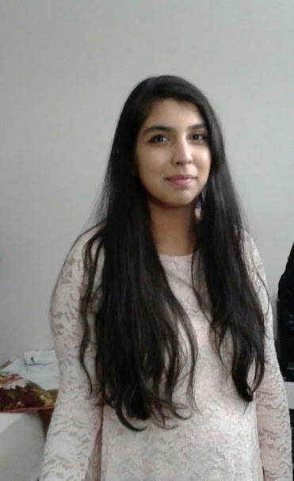

Hi everyone! My name is Akshita and I'm a third year transfer student, majoring in ITM. I transferred from College of DuPage last semester, where I studied for 4 semesters. COD was also where I got to join the Phi Theta Kappa Honor Society.
As an international student, I was unable to work or get an internship, but I finally got my work authorization and now I'm looking for a part-time job or an internship. Instead, I've been volunteering my time at the local public library.
Most of my free time is spent reading. I'm an avid reader of all genres, but my favorites are mysteries and fantasy books. My current obsessioin is the Furies of Calderon series by Jim Butcher. My other hobbies include cooking, baking and travelling.
